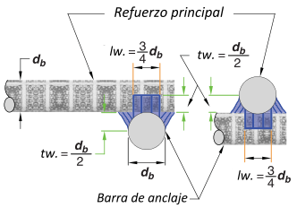

Datos iniciales
Materiales.
| fc. Resistencia del concreto. _ [MPa] | {{material.fc}} |
| fy. Fluencia del acero. _ [MPa] | {{material.fy}} |
| µ. Coeficiente de fricción. | {{material.u}} |
| øv. Factor de reducción a cortante. | {{material.phiv}} |
| øf. Factor de reducción a flexión. | {{material.phif}} |
| Número de la barra refuerzo principal. | {{ref.Nb}} |
| Número de la barra estribos cerrados. | {{ref.Nbe}} |
Geometría.
| av. Dist. aplicación de carga. _ [cm] | {{geom.av}} |
| b. Ancho del soporte. _ [cm] | {{geom.b}} |
| c. Ancho de la ménsula. _ [cm] | {{geom.c}} |
| h. Altura de la ménsula. _ [cm] | {{geom.h}} |
| r. Recubrimiento del refuerzo. _ [cm] | {{geom.r}} |
| bw. Largo de la ménsula _ [cm] | {{geom.bw}} |
Cargas.
| Vu. Fuerza cortante. _ [kN] | {{carga.Vu}} |
| Nuc. Fuerza horizontal. _ [kN] | {{carga.Nuc1}} |
| Nuc cal = 0.2 * Vu _ [kN] | {{carga.Nuc2}} |
| Nuc = máx(Nuc, Nuc cal) _ [kN] | {{carga.Nuc}} |
| Mu. Momento flector _ [kN.cm] | {{carga.Mu}} |
Diseño
Refuerzo principal
| Avf = Vu / (ø * fy * μ) _ [cm²] | {{calculo.Avf}} |
| An = Nuc / (ø * fy) _ [cm²] | {{calculo.An}} |
| Af = Mu / (ø * fy * (d - a / 2)) _ [cm²] | {{calculo.Af}} |
| As1 = Af + An _ [cm²] | {{calculo.As1}} |
| As2 = 2/3 * Avf + An _ [cm²] | {{calculo.As2}} |
| As3 = 0.04 * (fc / fy ) * bw * d _ [cm²] | {{calculo.As3}} |
| As = máx (As1, As2, As3) _ [cm²] | {{calculo.As}} |
Refuerzo auxiliar
| Aa : 0.002 * bw * c _ [cm²] | {{calculo.Aa}} |
Estribos cerrados
| Ah = 0.5 * (As - An) _ [cm²] | {{calculo.Ah}} |
Distribución de refuerzo
| Refuerzo principal | {{ref.Refp}} |
| Refuerzo auxiliar | {{ref.Refa}} |
| Estribos cerrados | {{ref.Refe}} |
Chequeos y detalles
Chequeo inicial
| Relación av/d < 1.0 | {{chequeo.relacion_ad}} |
| hm: hmin = 0.5 * d _ [cm] | {{geom.hmin}} |
| Nuc ≤ Vu | {{chequeo.Nuc_menor_Vu}} |
Verificación Vu _ kN
| Vc1 = 0.2 * ø * fc * bw * d _ [kN] | {{calculo.Vc1}} |
| Vc2 = (3.3 + 0.08 * fc) * ø * bw * d _ [kN] | {{calculo.Vc2}} |
| Vc3 = 11 * ø * bw * d _ [kN] | {{calculo.Vc3}} |
| Vc = mín. (Vc1, Vc2, Vc3) _ [kN] | {{calculo.Vc}} |
| Vu ≤ Vc | {{chequeo.Vu_menor_Vc}} |
Verificación refuerzo mínimo
| Asc. Acero colocado _ [cm²] | {{calculo.Ascol}} |
| pcal = Asc / (bw * d) | {{calculo.pcal}} |
| pmín = 0.04 * fc / fy | {{calculo.pmin}} |
| pcal ≥ pmín | {{chequeo.pcal_mayor_pmin}} |
Detalles de la soldadura
| db. Diámetro refuerzo principal. _ [cm] | {{ref.db}} |
| lw. Long lateral de la soldadura. _ [cm] | {{calculo.lw}} |
| tw. Long transversal de la soldadura. _ [cm] | {{calculo.tw}} |
Geometría de la ménsula

Detalles de la soldadura.
